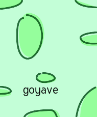

img-25.xml
$ cat img-25.sh ./pppo7o.opt 0 img-25.xml > img-25.0.xml ./pppo7o.opt 10 img-25.xml > img-25.10.xml ./pppo7o.opt 50 img-25.xml > img-25.50.xml ./xmgk.opt img-25.0.xml && cp img-27c.png img-27.0.png ./xmgk.opt img-25.10.xml && cp img-27c.png img-27.10.png ./xmgk.opt img-25.50.xml && cp img-27c.png img-27.50.png feh img-27.0.png img-27.10.png img-27.50.png convert -delay 50 -loop 0 img-27.0.png img-27.10.png img-27.50.png img-27.gif
<msl> <image> <merge> <layer> <new w='190' h='230' rgb='195,254,215' /> </layer> <layer compose='multiply'> <new w='190' h='230' rgb='255,255,255' /> <path coord='relative' rgb='195,255,185'> <move_to p='55 25' /> <quad_curve_to h='29 2' p='31 41' /> <quad_curve_to h='-2 30' p='-21 43' /> <quad_curve_to h='-3 1' p='-7 2' /> <quad_curve_to h='-20 -2' p='-21 -41' /> <quad_curve_to h='-1 -39' p='17 -45' /> <close_path /> </path> <path coord='absolute' rgb='195,255,185'> <move_to p='190 170' /> <line_to p='190 230' /> <line_to p='157 230' /> <quad_curve_to h='157 187' p='190 170' /> <close_path /> </path> <path coord='absolute' rgb='195,255,185'> <move_to p='53 230' /> <quad_curve_to h='59 216' p='105 216' /> <quad_curve_to h='113 216' p='117 230' /> <close_path /> </path> <path coord='absolute' rgb='195,255,185'> <move_to p='147 0' /> <quad_curve_to h='154 13' p='190 14' /> <move_to p='147 0' /> <close_path /> </path> <path coord='absolute' rgb='195,255,185'> <move_to p='190 68' /> <quad_curve_to h='161 70' p='157 78' /> <quad_curve_to h='159 92' p='190 90' /> <line_to p='190 68' /> <close_path /> </path> <path coord='absolute' rgb='195,255,185'> <move_to p='0 175' /> <quad_curve_to h='19 176' p='21 184' /> <quad_curve_to h='19 189' p='0 189' /> <line_to p='0 175' /> <close_path /> </path> <path coord='absolute' rgb='195,255,185'> <move_to p='43 0' /> <quad_curve_to h='41 13' p='0 17' /> <line_to p='0 0' /> <line_to p='43 0' /> <close_path /> </path> <path coord='absolute' rgb='195,255,185'> <move_to p='85 145' /> <quad_curve_to h='106 146' p='109 155' /> <quad_curve_to h='108 161' p='89 163' /> <quad_curve_to h='78 163' p='73 156' /> <quad_curve_to h='73 147' p='85 145' /> <close_path /> </path> </layer> <layer compose='multiply'> <new w='190' h='230' rgb='255,255,255' /> <path coord='relative' rgb_stroke='50,110,70' stroke_width='2.8'> <move_to p='51 29' /> <quad_curve_to h='29 2' p='31 41' /> <quad_curve_to h='-2 30' p='-21 43' /> <quad_curve_to h='-3 1' p='-7 2' /> <quad_curve_to h='-20 -2' p='-21 -41' /> <quad_curve_to h='-1 -39' p='13 -39' /> </path> <path coord='absolute' rgb_stroke='50,110,70' stroke_width='2.8'> <move_to p='149 230' /> <quad_curve_to h='155 187' p='187 171' /> </path> <path coord='absolute' rgb_stroke='50,110,70' stroke_width='2.8'> <move_to p='47 230' /> <quad_curve_to h='52 216' p='99 216' /> <quad_curve_to h='107 216' p='111 230' /> </path> <path coord='absolute' rgb_stroke='50,110,70' stroke_width='2.8'> <move_to p='147 0' /> <quad_curve_to h='154 13' p='189 14' /> </path> <path coord='absolute' rgb_stroke='50,110,70' stroke_width='2.8'> <move_to p='190 63' /> <quad_curve_to h='161 65' p='157 73' /> <quad_curve_to h='159 87' p='190 85' /> </path> <path coord='absolute' rgb_stroke='50,110,70' stroke_width='2.8'> <move_to p='0 170' /> <quad_curve_to h='19 171' p='21 179' /> <quad_curve_to h='19 184' p='0 184' /> </path> <path coord='absolute' rgb_stroke='50,110,70' stroke_width='2.8'> <move_to p='43 0' /> <quad_curve_to h='41 13' p='0 17' /> </path> <path coord='absolute' rgb_stroke='50,110,70' stroke_width='2.8'> <move_to p='83 143' /> <quad_curve_to h='104 144' p='107 153' /> <quad_curve_to h='106 159' p='87 161' /> <quad_curve_to h='76 161' p='71 154' /> <quad_curve_to h='71 145' p='80 144' /> </path> </layer> <layer compose='multiply'> <new w='190' h='230' rgb='255,255,255' /> <!-- <draw_text txt="goyave" pointsize="23:26!0-170" pos="45,184" font='./generic.ttf' rgb='0,0,0' /> --> <draw_text txt="goyave" pointsize="23" pos="45,184:155,184!0-170" font='./generic.ttf' rgb='0,0,0' /> </layer> </merge> <display /> <write filename='img-27c.png' /> </image> </msl>
linear expension from '23' to '26',
spaning on the time, from '0' until '170'
"23:26!0-170"
pointsize="23"
for t='0'

pos="45,184:155,184!0-170"
for t='0', pos="45,184"
for t='170', pos="155,184
<- / ->